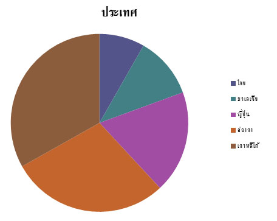
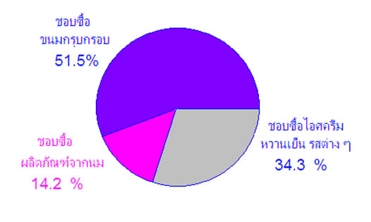

ในชีวิตประจำวันเราจะพบข้อมูลหลากหลายซึ่งได้จากการสำรวจ การตรวจสอบข้อเท็จจริง แล้วนำเสนอข้อมูลในรูปแบบที่แตกต่างกันออกไป เป็นข้อความบ้าง รูปภาพบ้าง แผนภูมิบ้าง ฯลฯ
การนำเสนอข้อมูลในรูปแบบแผนภูมินั้น มีหลากหลายรูปแบบแต่ในบทนี้เราจะมาเรียนรู้การนำเสนอข้อมูลในรูปแผนภูมิวงกลมกันครับ
การอ่านแผนภูมิรูปวงกลม
ในชีวิตประจำวันเราจะพบข้อมูลหลากหลายซึ่งได้จากการสำรวจ การตรวจสอบข้อเท็จจริง แล้วนำเสนอข้อมูลในรูปแบบที่แตกต่างกันออกไป บ่อยครั้งเราอาจพบการนำเสนอข้อมูลในรูปข้อความ เช่น
ผลการศึกษาของสำนักพัฒนาธุรกิจอุตสาหกรรม กรมส่งเสริมอุตสาหกรรมพบว่า การลงทุนในกิจการผลิตปลาร้าแปรรูปขนาดเล็กใช้เงินลงทุนประมาณ 2,800,000 บาท (ไม่รวมค่าที่ดินและสิ่งปลูกสร้าง) โดยเป็นการลงทุนในสินทรัพย์ถาวรประมาณ 60% ของเงินลงทุนซึ่งประกอบด้วยเครื่องจักร 1,000,000 บาทยานพาหนะและอุปกรณ์สำนักงานต่างๆ 750,000 บาท ส่วนเงินทุนหมุนเวียนในการดำเนินกิจการประมาณ 1,050,000 บาท หรือประมาณ 40% ของเงินลงทุน
นอกจากนี้เราอาจพบการนำเสนอข้อมูลในรูปข้อความกึ่งตาราง เช่น หนังสือพิมพ์ไทยรัฐฉบับประจำวันพุทธที่ 31 ธันวาคม พ.ศ. 2546 ได้นำเสนอข้อมูลเกี่ยวกับมูลค่าความเสียหายทางเศรษฐกิจ โดยประมาณของบางประเทศในเอเชียจากโรคซาร์ส เมื่อ พ.ศ. 2546 ซึ่งประเมินโดยนิตยสาร ฟาร์อีสเทิร์น อิโคโนมิค รีวิว แยกเป็นรายประเทศดังนี้
เกาหลีใต้ 2,000 ล้านเหรียญสหรัฐฯ หรือประมาณ 80,200 ล้านบาท
ฮ่องกง 1,700 ล้านเหรียญสหรัฐฯ หรือประมาณ 69,700 ล้านบาท
ญี่ปุ่น 1,100 ล้านเหรียญสหรัฐฯ หรือประมาณ 45,100 ล้านบาท
มาเลเซีย 660 ล้านเหรียญสหรัฐฯ หรือประมาณ 27,060 ล้านบาท
ไทย 490 ล้านเหรียญสหรัฐฯ หรือประมาณ 20,000 ล้านบาท
เมื่อรวมมูลค่าความเสียหายโดยประมาณของทุกประเภทดังกล่าวแล้วจะสูงถึง 5,950 ล้านเหรียญสหรัฐฯ
หรือประมาณ 2.4 แสนล้านบาท
จากตัวอย่างที่กล่าวมาจะเห็นว่า การนำเสนอข้อมูลในรูปข้อความมีลักษณะเป็นความเรียงทำให้ข้อมูลที่เป็นปริมาณไม่เด่นชัด ต้องใช้เวลาในการอ่านและวิเคราะห์ ส่วนการนำเสนอข้อมูลในรูปข้อความกึ่งตาราง มีการแยกข้อมูลที่เป็นปริมาณให้เห็นเด่นชัดขึ้น
ถ้าต้องการนำเสนอข้อมูลที่เป็นปริมาณให้ชัดเจน น่าสนใจและสามารถเปรียบเทียบข้อมูล ให้เห็นเป็นรูปธรรม ดูง่ายขึ้น เราอาจนำเสนอข้อมูลด้วย แผนภูมิรูปวงกลม โดยแทนปริมาณในข้อมูลทั้งหมดด้วยพื้นที่ในวงกลมหนึ่งวง และแบ่งพื้นที่ในวงกลมจากจุดศูนย์กลางออกเป็นส่วนของวงกลมย่อยๆตามส่วนของปริมาณที่นำเสนอ แล้วเขียนตัวเลขแสดงข้อมูลกำกับไว้
จากข้อมูลข้างต้นสามารถนำเสนอด้วยแผนภูมิรูปวงกลมได้ดังนี้
แผนภูมิแสดงมูลค่าความเสียหายทางเศรษฐกิจโดยประมาณของบางประเทศในเอเชียจากโรคซาร์ส เมื่อ พ.ศ. 2546 (ล้านบาท)
จากแผนภูมิเมื่อเปรียบเทียบพื้นที่ของวงกลมซึ่งแทนมูลค่าความเสียหายของแต่ละประเทศจะเห็นว่าพื้นที่ซึ่งแทนมูลค่าความเสียหายของประเทศไทยมีขนาดเล็กที่สุด แสดงว่ามูลค่าความเสียหายของประเทศไทยน้อยที่สุดเมื่อเทียบกับประเทศอื่นๆ ที่นำมาแสดง และเมื่อเปรียบเทียบพื้นที่ซึ่งแทนมูลค่าความเสียหายของประเทศเกาหลีใต้กับพื้นที่ของวงกลมทั้งหมด จะเห็นว่ามีพื้นที่ประมาณหนึ่งในสามของพื้นที่ทั้งหมด แสดงว่าความเสียหายของเกาหลีใต้ประเทศเดียวมีมูลค่าประมาณหนึ่งในสามของความเสียหายทั้งหมด
ในทางปฏิบัติถ้าข้อมูลที่ต้องการนำเสนอโดยแผนภูมิรูปวงกลมเป็นปริมาณที่มีค่ามาก เรานิยมแสดงข้อมูลเหล่านั้นในรูปร้อยละของปริมาณในข้อมูลทั้งหมด เพื่อให้ง่ายต่อการวิเคราะห์และให้เห็นการเปรียบเทียบได้ชัดเจนยิ่งขึ้น
การเขียนแผนภูมิรูปวงกลม
สำหรับการเขียนแผนภูมิรูปวงกลมทำได้โดยลากส่วนของเส้นตรงจากจุดศูนย์กลางของวงกลมไปยังเส้นรอบวง เพื่อแบ่งพื้นที่ในวงกลมออกเป็นส่วนย่อยๆตามส่วนของปริมาณในข้อมูลแต่ละรายการ
ตัวอย่าง
จากการสำรวจโรงเรียนคณิตวิทยาที่เป็นโรงเรียนขนาดใหญ่แห่งหนึ่งเกี่ยวกับร้อยละของนักเรียนที่ชอบซื้อขนม
สามอันดับแรก พบว่านักเรียน
ร้อยละ 51.5 ชอบซื้อขนมกรุบกรอบ
ร้อยละ 34.3 ชอบซื้อไอศครีมหวานเย็น รสต่าง ๆ
ร้อยละ 14.2 ชอบซื้อผลิตภัณฑ์จากนม
จงนำเสนอข้อมูลด้วแผนภูมิรูปวงกลม
วิธีทำ
เนื่องจากเปอร์เซนต์ทั้งหมด เท่ากับ 100% และเราทราบอยู่แล้วว่า
มุมรอบจุดศนย์กลางของวงกลมเท่ากับ 360 องศา
ดังนั้น 100% เท่ากับ 360 องศา
1% เท่ากับ 3.6 องศา เราก็จะหา องศาของวงกลมออกมาได้
จากโจทย์ กำหนดมาให้
นักเรียน ร้อยละ 51.5 ชอบซื้อขนมกรุบกรอบ
ร้อยละ 34.3 ชอบซื้อไอศครีมหวานเย็น รสต่าง ๆ
และ ร้อยละ 14.2 ชอบซื้อผลิตภัณฑ์จากนม
ดังนั้น ผลรวมทั้งหมดคือ = 51.5 + 34.3 + 14.2 = 100%
การคำณวนหาพื้นที่ ของวงกลม ในแต่ละส่วน
100% คิดเป็นมุมที่จุดศูนย์กลางขนาด 360 องศา
1% คิดเป็นมุมที่จุดศูนย์กลางขนาด 360/100 องศา = 3.6 องศา
ดังนั้นจะได้ ชอบซื้อขนม กรุบกรอบ 51.5% = 51.5 x 3.6 = 185.4 องศา
ชอบซื้อไอศครีมหวานเย็น รสต่าง ๆ 34.3% = 34.3 x 3.6 = 123.48 องศา
ชอบซื้อผลิตภัณฑ์จากนม 14.2% = 14.2 x 3.6 = 51.12 องศา
ดังนั้น จากการคำนวณจะได้แผนภูมิรูปวงกลมดังนี้
